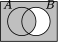
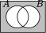
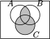
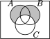

Section 1.3 Sets
¶The most fundamental objects we will use in our studies (and really in all of math) are sets. Much of what follows might be review, but it is very important that you are fluent in the language of set theory. Most of the notation we use below is standard, although some might be a little different than what you have seen before.
For us, a set will simply be an unordered collection of objects. Two examples: we could consider the set of all actors who have played The Doctor on Doctor Who, or the set of natural numbers between 1 and 10 inclusive. In the first case, Tom Baker is a element (or member) of the set, while Idris Elba, among many others, is not an element of the set. Also, the two examples are of different sets. Two sets are equal exactly if they contain the exact same elements. For example, the set containing all of the vowels in the declaration of independence is precisely the same set as the set of vowels in the word “questionably” (namely, all of them); we do not care about order or repetitions, just whether the element is in the set or not.
Subsection Notation
¶We need some notation to make talking about sets easier. Consider,
This is read, “\(A\) is the set containing the elements 1, 2 and 3.” We use curly braces “\(\{,~~ \}\)” to enclose elements of a set. Some more notation:
The symbol “\(\in\)” is read “is in” or “is an element of.” Thus the above means that \(a\) is an element of the set containing the letters \(a\text{,}\) \(b\text{,}\) and \(c\text{.}\) Note that this is a true statement. It would also be true to say that \(d\) is not in that set:
Be warned: we write “\(x \in A\)” when we wish to express that one of the elements of the set \(A\) is \(x\text{.}\) For example, consider the set,
This is a strange set, to be sure. It contains four elements: the number 1, the letter b, the set \(\{x,y,z\}\text{,}\) and the empty set \(\emptyset = \{ \}\text{,}\) the set containing no elements. Is \(x\) in \(A\text{?}\) The answer is no. None of the four elements in \(A\) are the letter \(x\text{,}\) so we must conclude that \(x \notin A\text{.}\) Similarly, consider the set \(B = \{1,b\}\text{.}\) Even though the elements of \(B\) are elements of \(A\text{,}\) we cannot say that the set \(B\) is one of the elements of \(A\text{.}\) Therefore \(B \notin A\text{.}\) (Soon we will see that \(B\) is a subset of \(A\text{,}\) but this is different from being an element of \(A\text{.}\))
We have described the sets above by listing their elements. Sometimes this is hard to do, especially when there are a lot of elements in the set (perhaps infinitely many). For instance, if we want \(A\) to be the set of all even natural numbers, would could write,
but this is a little imprecise. A better way would be
Let's look at this carefully. First, there are some new symbols to digest: “\(\N\)” is the symbol usually used to denote that natural numbers, which we will take to be the set \(\{0, 1, 2, 3, \ldots\}\text{.}\) Next, the colon, “:”, is read such that; it separates the elements that are in the set from the condition that the elements in the set must satisfy. So putting this all together, we would read the set as, “the set of all \(x\) in the natural numbers, such that there exists some \(n\) in the natural numbers for which \(x\) is twice \(n\text{.}\)” In other words, the set of all natural numbers, that are even. Here is another way to write the same set.
Note: Sometimes mathematicians use \(|\) or \(\backepsilon\) for the “such that” symbol instead of the colon. Also, there is a fairly even split between mathematicians about whether \(0\) is an element of the natural numbers, so be careful there.
This notation is usually called set builder notation. It tells use how to build a set by telling us precisely the condition elements must meet to gain access (the condition is the logical statement after the “\(\st\)” symbol). Reading and comprehending sets written in this way takes practice. Here are some more examples:
Example 1.3.1.
Describe each of the following sets both in words and by listing out enough elements to see the pattern.
- \(\{x \st x + 3 \in \N\}\text{.}\)
- \(\{x \in \N \st x + 3 \in \N\}\text{.}\)
- \(\{x \st x \in \N \vee -x \in \N\}\text{.}\)
- \(\{x \st x \in \N \wedge -x \in \N\}\text{.}\)
This is the set of all numbers which are 3 less than a natural number (i.e., that if you add 3 to them, you get a natural number). The set could also be written as \(\{-3, -2, -1, 0, 1, 2, \ldots\}\) (note that 0 is a natural number, so \(-3\) is in this set because \(-3 + 3 = 0\)).
This is the set of all natural numbers which are 3 less than a natural number. So here we just have \(\{0, 1, 2,3 \ldots\}\text{.}\)
This is the set of all integers (positive and negative whole numbers, written \(\Z\)). In other words, \(\{\ldots, -2, -1, 0, 1, 2, \ldots\}\text{.}\)
Here we want all numbers \(x\) such that \(x\) and \(-x\) are natural numbers. There is only one: 0. So we have the set \(\{0\}\text{.}\)
There is also a subtle variation on set builder notation. While the condition is generally given after the “such that”, sometimes it is hidden in the first part. Here is an example.
Example 1.3.2.
List a few elements in the sets below and describe them in words. The set \(\Z\) is the set of integers; positive and negative whole numbers.
\(A = \{x \in \Z \st x^2 \in \N\}\)
\(B = \{x^2 \st x \in \N\}\)
The set of integers that pass the condition that their square is a natural number. Well, every integer, when you square it, gives you a non-negative integer, so a natural number. Thus \(A = \Z = \{\ldots, -2, -1, 0, 1, 2, 3, \ldots\}\text{.}\)
-
Here we are looking for the set of all \(x^2\)s where \(x\) is a natural number. So this set is simply the set of perfect squares. \(B = \{0, 1, 4, 9, 16, \ldots\}\text{.}\)
Another way we could have written this set, using more strict set builder notation, would be as \(B = \{x \in \N \st x = n^2 \text{ for some } n \in \N\}\text{.}\)
We already have a lot of notation, and there is more yet. Below is a handy chart of symbols. Some of these will be discussed in greater detail as we move forward.
Special sets.
- \(\emptyset\)
The empty set is the set which contains no elements.
- \(\U\)
The universe set is the set of all elements.
- \(\N\)
The set of natural numbers. That is, \(\N = \{0, 1, 2, 3\ldots\}\text{.}\)
- \(\Z\)
The set of integers. That is, \(\Z = \{\ldots, -2, -1, 0, 1, 2, 3, \ldots\}\text{.}\)
- \(\Q\)
The set of rational numbers.
- \(\R\)
The set of real numbers.
- \(\pow(A)\)
The power set of any set \(A\) is the set of all subsets of \(A\text{.}\)
Set Theory Notation.
- \(\{, \}\)
We use these braces to enclose the elements of a set. So \(\{1,2,3\}\) is the set containing 1, 2, and 3.
- \(\st\)
\(\{x \st x > 2\}\) is the set of all \(x\) such that \(x\) is greater than 2.
- \(\in\)
\(2 \in \{1,2,3\}\) asserts that 2 is an element of the set \(\{1,2,3\}\text{.}\)
- \(\not\in\)
\(4 \notin \{1,2,3\}\) because 4 is not an element of the set \(\{1,2,3\}\text{.}\)
- \(\subseteq\)
\(A \subseteq B\) asserts that \(A\) is a subset of \(B\): every element of \(A\) is also an element of \(B\text{.}\)
- \(\subset\)
\(A \subset B\) asserts that \(A\) is a proper subset of \(B\): every element of \(A\) is also an element of \(B\text{,}\) but \(A \ne B\text{.}\)
- \(\cap\)
\(A \cap B\) is the intersection of \(A\) and \(B\): the set containing all elements which are elements of both \(A\) and \(B\text{.}\)
- \(\cup\)
\(A \cup B\) is the union of \(A\) and \(B\): is the set containing all elements which are elements of \(A\) or \(B\) or both.
- \(\times\)
\(A \times B\) is the Cartesian product of \(A\) and \(B\): the set of all ordered pairs \((a,b)\) with \(a \in A\) and \(b \in B\text{.}\)
- \(\setminus\)
\(A \setminus B\) is \(A\) set-minus \(B\): the set containing all elements of \(A\) which are not elements of \(B\text{.}\)
- \(\bar{A}\)
The complement of \(A\) is the set of everything which is not an element of \(A\text{.}\)
- \(\card{A}\)
The cardinality (or size) of \(A\) is the number of elements in \(A\text{.}\)
Investigate!
-
Find the cardinality of each set below.
- \(A = \{3,4,\ldots, 15\}\text{.}\)
- \(B = \{n \in \N \st 2 \lt n \le 200\}\text{.}\)
- \(C = \{n \le 100 \st n \in \N \wedge \exists m \in \N (n = 2m+1)\}\text{.}\)
Find two sets \(A\) and \(B\) for which \(|A| = 5\text{,}\) \(|B| = 6\text{,}\) and \(|A\cup B| = 9\text{.}\) What is \(|A \cap B|\text{?}\)
Find sets \(A\) and \(B\) with \(|A| = |B|\) such that \(|A\cup B| = 7\) and \(|A \cap B| = 3\text{.}\) What is \(|A|\text{?}\)
Let \(A = \{1,2,\ldots, 10\}\text{.}\) Define \(\mathcal{B}_2 = \{B \subseteq A \st |B| = 2\}\text{.}\) Find \(|\mathcal{B}_2|\text{.}\)
- For any sets \(A\) and \(B\text{,}\) define \(AB = \{ab \st a\in A \wedge b \in B\}\text{.}\) If \(A = \{1,2\}\) and \(B = \{2,3,4\}\text{,}\) what is \(|AB|\text{?}\) What is \(|A \times B|\text{?}\)
Subsection Relationships Between Sets
¶We have already said what it means for two sets to be equal: they have exactly the same elements. Thus, for example,
(Remember, the order the elements are written down in does not matter.) Also,
since these are all ways to write the set containing the first three positive integers (how we write them doesn't matter, just what they are).
What about the sets \(A = \{1, 2, 3\}\) and \(B = \{1, 2, 3, 4\}\text{?}\) Clearly \(A \ne B\text{,}\) but notice that every element of \(A\) is also an element of \(B\text{.}\) Because of this we say that \(A\) is a subset of \(B\text{,}\) or in symbols \(A \subset B\) or \(A \subseteq B\text{.}\) Both symbols are read “is a subset of.” The difference is that sometimes we want to say that \(A\) is either equal to or is a subset of \(B\text{,}\) in which case we use \(\subseteq\text{.}\) This is analogous to the difference between \(\lt\) and \(\le\text{.}\)
Example 1.3.3.
Let \(A = \{1, 2, 3, 4, 5, 6\}\text{,}\) \(B = \{2, 4, 6\}\text{,}\) \(C = \{1, 2, 3\}\) and \(D = \{7, 8, 9\}\text{.}\) Determine which of the following are true, false, or meaningless.
- \(A \subset B\text{.}\)
- \(B \subset A\text{.}\)
- \(B \in C\text{.}\)
- \(\emptyset \in A\text{.}\)
- \(\emptyset \subset A\text{.}\)
- \(A \lt D\text{.}\)
- \(3 \in C\text{.}\)
- \(3 \subset C\text{.}\)
- \(\{3\} \subset C\text{.}\)
False. For example, \(1\in A\) but \(1 \notin B\text{.}\)
True. Every element in \(B\) is an element in \(A\text{.}\)
False. The elements in \(C\) are 1, 2, and 3. The set \(B\) is not equal to 1, 2, or 3.
False. \(A\) has exactly 6 elements, and none of them are the empty set.
True. Everything in the empty set (nothing) is also an element of \(A\text{.}\) Notice that the empty set is a subset of every set.
Meaningless. A set cannot be less than another set.
True. \(3\) is one of the elements of the set \(C\text{.}\)
Meaningless. \(3\) is not a set, so it cannot be a subset of another set.
True. \(3\) is the only element of the set \(\{3\}\text{,}\) and is an element of \(C\text{,}\) so every element in \(\{3\}\) is an element of \(C\text{.}\)
In the example above, \(B\) is a subset of \(A\text{.}\) You might wonder what other sets are subsets of \(A\text{.}\) If you collect all these subsets of \(A\) into a new set, we get a set of sets. We call the set of all subsets of \(A\) the power set of \(A\text{,}\) and write it \(\pow(A)\text{.}\)
Example 1.3.4.
Let \(A = \{1,2,3\}\text{.}\) Find \(\pow(A)\text{.}\)
\(\pow(A)\) is a set of sets, all of which are subsets of \(A\text{.}\) So
Notice that while \(2 \in A\text{,}\) it is wrong to write \(2 \in \pow(A)\) since none of the elements in \(\pow(A)\) are numbers! On the other hand, we do have \(\{2\} \in \pow(A)\) because \(\{2\} \subseteq A\text{.}\)
What does a subset of \(\pow(A)\) look like? Notice that \(\{2\} \not\subseteq \pow(A)\) because not everything in \(\{2\}\) is in \(\pow(A)\text{.}\) But we do have \(\{ \{2\} \} \subseteq \pow(A)\text{.}\) The only element of \(\{\{2\}\}\) is the set \(\{2\}\) which is also an element of \(\pow(A)\text{.}\) We could take the collection of all subsets of \(\pow(A)\) and call that \(\pow(\pow(A))\text{.}\) Or even the power set of that set of sets of sets.
Another way to compare sets is by their size. Notice that in the example above, \(A\) has 6 elements and \(B\text{,}\) \(C\text{,}\) and \(D\) all have 3 elements. The size of a set is called the set's cardinality . We would write \(|A| = 6\text{,}\) \(|B| = 3\text{,}\) and so on. For sets that have a finite number of elements, the cardinality of the set is simply the number of elements in the set. Note that the cardinality of \(\{ 1, 2, 3, 2, 1\}\) is 3. We do not count repeats (in fact, \(\{1, 2, 3, 2, 1\}\) is exactly the same set as \(\{1, 2, 3\}\)). There are sets with infinite cardinality, such as \(\N\text{,}\) the set of rational numbers (written \(\mathbb Q\)), the set of even natural numbers, and the set of real numbers (\(\mathbb R\)). It is possible to distinguish between different infinite cardinalities, but that is beyond the scope of this text. For us, a set will either be infinite, or finite; if it is finite, the we can determine its cardinality by counting elements.
Example 1.3.5.
Find the cardinality of \(A = \{23, 24, \ldots, 37, 38\}\text{.}\)
Find the cardinality of \(B = \{1, \{2, 3, 4\}, \emptyset\}\text{.}\)
If \(C = \{1,2,3\}\text{,}\) what is the cardinality of \(\pow(C)\text{?}\)
Since \(38 - 23 = 15\text{,}\) we can conclude that the cardinality of the set is \(|A| = 16\) (you need to add one since 23 is included).
Here \(|B| = 3\text{.}\) The three elements are the number 1, the set \(\{2,3,4\}\text{,}\) and the empty set.
We wrote out the elements of the power set \(\pow(C)\) above, and there are 8 elements (each of which is a set). So \(\card{\pow(C)} = 8\text{.}\) (You might wonder if there is a relationship between \(\card{A}\) and \(\card{\pow(A)}\) for all sets \(A\text{.}\) This is a good question which we will return to in Chapter 3.)
Subsection Operations On Sets
¶Is it possible to add two sets? Not really, however there is something similar. If we want to combine two sets to get the collection of objects that are in either set, then we can take the union of the two sets. Symbolically,
read, “\(C\) is the union of \(A\) and \(B\text{,}\)” means that the elements of \(C\) are exactly the elements which are either an element of \(A\) or an element of \(B\) (or an element of both). For example, if \(A = \{1, 2, 3\}\) and \(B = \{2, 3, 4\}\text{,}\) then \(A \cup B = \{1, 2, 3, 4\}\text{.}\)
The other common operation on sets is intersection. We write,
and say, “\(C\) is the intersection of \(A\) and \(B\text{,}\)” when the elements in \(C\) are precisely those both in \(A\) and in \(B\text{.}\) So if \(A = \{1, 2, 3\}\) and \(B = \{2, 3, 4\}\text{,}\) then \(A \cap B = \{2, 3\}\text{.}\)
Often when dealing with sets, we will have some understanding as to what “everything” is. Perhaps we are only concerned with natural numbers. In this case we would say that our universe is \(\N\text{.}\) Sometimes we denote this universe by \(\U\text{.}\) Given this context, we might wish to speak of all the elements which are not in a particular set. We say \(B\) is the complement of \(A\text{,}\) and write,
when \(B\) contains every element not contained in \(A\text{.}\) So, if our universe is \(\{1, 2,\ldots, 9, 10\}\text{,}\) and \(A = \{2, 3, 5, 7\}\text{,}\) then \(\bar A = \{1, 4, 6, 8, 9,10\}\text{.}\)
Of course we can perform more than one operation at a time. For example, consider
This is the set of all elements which are both elements of \(A\) and not elements of \(B\text{.}\) What have we done? We've started with \(A\) and removed all of the elements which were in \(B\text{.}\) Another way to write this is the set difference:
It is important to remember that these operations (union, intersection, complement, and difference) on sets produce other sets. Don't confuse these with the symbols from the previous section (element of and subset of). \(A \cap B\) is a set, while \(A \subseteq B\) is true or false. This is the same difference as between \(3 + 2\) (which is a number) and \(3 \le 2\) (which is false).
Example 1.3.6.
Let \(A = \{1, 2, 3, 4, 5, 6\}\text{,}\) \(B = \{2, 4, 6\}\text{,}\) \(C = \{1, 2, 3\}\) and \(D = \{7, 8, 9\}\text{.}\) If the universe is \(\U = \{1, 2, \ldots, 10\}\text{,}\) find:
- \(A \cup B\text{.}\)
- \(A \cap B\text{.}\)
- \(B \cap C\text{.}\)
- \(A \cap D\text{.}\)
- \(\bar{B \cup C}\text{.}\)
- \(A \setminus B\text{.}\)
- \((D \cap \bar C) \cup \bar{A \cap B}\text{.}\)
- \(\emptyset \cup C\text{.}\)
- \(\emptyset \cap C\text{.}\)
- \(A \cup B = \{1, 2, 3, 4, 5, 6\} = A\) since everything in \(B\) is already in \(A\text{.}\)
- \(A \cap B = \{2, 4, 6\} = B\) since everything in \(B\) is in \(A\text{.}\)
- \(B \cap C = \{2\}\) as the only element of both \(B\) and \(C\) is 2.
- \(A \cap D = \emptyset\) since \(A\) and \(D\) have no common elements.
- \(\bar{B \cup C} = \{5, 7, 8, 9, 10\}\text{.}\) First we find that \(B \cup C = \{1, 2, 3, 4, 6\}\text{,}\) then we take everything not in that set.
- \(A \setminus B = \{1, 3, 5\}\) since the elements 1, 3, and 5 are in \(A\) but not in \(B\text{.}\) This is the same as \(A \cap \bar B\text{.}\)
- \((D \cap \bar C) \cup \bar{A \cap B} = \{1, 3, 5, 7, 8, 9, 10\}\text{.}\) The set contains all elements that are either in \(D\) but not in \(C\) (i.e., \(\{7,8,9\}\)), or not in both \(A\) and \(B\) (i.e., \(\{1,3,5,7,8,9,10\}\)).
- \(\emptyset \cup C = C\) since nothing is added by the empty set.
- \(\emptyset \cap C = \emptyset\) since nothing can be both in a set and in the empty set.
Having notation like this is useful. We will often want to add or remove elements from sets, and our notation allows us to do so precisely.
Example 1.3.7.
If \(A = \{1,2,3\}\text{,}\) then we can describe the set we get by adding the number 4 as \(A \cup \{4\}\text{.}\) If we want to express the set we get by removing the number 2 from \(A\) we can do so by writing \(A \setminus \{2\}\text{.}\)
Careful though. If you add an element to the set, you get a new set! So you would have \(B = A \cup \{4\}\) and then correctly say that \(B\) contains 4, but \(A\) does not.
You might notice that the symbols for union and intersection slightly resemble the logic symbols for “or” and “and.” This is no accident. What does it mean for \(x\) to be an element of \(A\cup B\text{?}\) It means that \(x\) is an element of \(A\) or \(x\) is an element of \(B\) (or both). That is,
Similarly,
Also,
which says \(x\) is an element of the complement of \(A\) if \(x\) is not an element of \(A\text{.}\)
There is one more way to combine sets which will be useful for us: the Cartesian product, \(A \times B\text{.}\) This sounds fancy but is nothing you haven't seen before. When you graph a function in calculus, you graph it in the Cartesian plane. This is the set of all ordered pairs of real numbers \((x,y)\text{.}\) We can do this for any pair of sets, not just the real numbers with themselves.
Put another way, \(A \times B = \{(a,b) \st a \in A \wedge b \in B\}\text{.}\) The first coordinate comes from the first set and the second coordinate comes from the second set. Sometimes we will want to take the Cartesian product of a set with itself, and this is fine: \(A \times A = \{(a,b) \st a, b \in A\}\) (we might also write \(A^2\) for this set). Notice that in \(A \times A\text{,}\) we still want all ordered pairs, not just the ones where the first and second coordinate are the same. We can also take products of 3 or more sets, getting ordered triples, or quadruples, and so on.
Example 1.3.8.
Let \(A = \{1,2\}\) and \(B = \{3,4,5\}\text{.}\) Find \(A \times B\) and \(A \times A\text{.}\) How many elements do you expect to be in \(B \times B\text{?}\)
\(A \times B = \{(1,3), (1,4), (1,5), (2,3), (2,4), (2,5)\}\text{.}\)
\(A \times A = A^2 = \{(1,1), (1,2), (2,1), (2,2)\}\text{.}\)
\(|B\times B| = 9\text{.}\) There will be 3 pairs with first coordinate \(3\text{,}\) three more with first coordinate \(4\text{,}\) and a final three with first coordinate \(5\text{.}\)
Subsection Venn Diagrams
¶There is a very nice visual tool we can use to represent operations on sets. A Venn diagram displays sets as intersecting circles. We can shade the region we are talking about when we carry out an operation. We can also represent cardinality of a particular set by putting the number in the corresponding region.
Each circle represents a set. The rectangle containing the circles represents the universe. To represent combinations of these sets, we shade the corresponding region. For example, we could draw \(A \cap B\) as:
Here is a representation of \(A \cap \bar B\text{,}\) or equivalently \(A \setminus B\text{:}\)
A more complicated example is \((B \cap C) \cup (C \cap \bar A)\text{,}\) as seen below.
Notice that the shaded regions above could also be arrived at in another way. We could have started with all of \(C\text{,}\) then excluded the region where \(C\) and \(A\) overlap outside of \(B\text{.}\) That region is \((A \cap C) \cap \bar B\text{.}\) So the above Venn diagram also represents \(C \cap \bar{\left((A\cap C)\cap \bar B\right)}\text{.}\) So using just the picture, we have determined that
Exercises Exercises
¶1.
Let \(A = \{1, 4, 9\}\) and \(B = \{1, 3, 6, 10\}\text{.}\) Find each of the following sets.
\(A \cup B\text{.}\)
\(A \cap B\text{.}\)
\(A \setminus B\text{.}\)
\(B \setminus A\text{.}\)
\(\{1, 3, 4, 6, 9, 10\}\text{.}\)
\(\{1\}\text{.}\)
\(\{4,9\}\text{.}\)
\(\{3, 6, 10\}\text{.}\)
2.
Find the least element of each of the following sets, if there is one.
\(\{n \in \N \st n^2 - 3 \ge 2\}\text{.}\)
\(\{n \in \N \st n^2 - 5 \in \N\}\text{.}\)
\(\{n^2+1 \st n \in \N\}\text{.}\)
\(\{n \in \N \st n = k^2 + 1 \text{ for some } k \in \N\}\text{.}\)
This is the set \(\{3, 4, 5, \ldots \}\) since we need each element to be a natural number whose square is at least three more than 2. Since \(3^2 - 3 = 6\) but \(2^2 - 3 = 1\) we see that the first such natural number is 3.
-
We get the same set as we did in the previous part, and the smallest non-negative number for which \(n^2 - 5\) is a natural numbers is 3.
Note that if we didn’t specify \(n \in \N\) then any integer less than \(-3\) would also be in the set, so there would not be a least element.
This is the set \(\{1, 2, 5, 10, \ldots\}\text{,}\) namely the set of numbers that are the result of squaring and adding 1 to a natural number. (\(0^2 + 1 = 1\text{,}\) \(1^2 + 1 = 2\text{,}\) \(2^2 + 1 = 5\) and so on.) Thus the least element of the set is 1.
Now we are looking for natural numbers that are equal to taking some natural number, squaring it and adding 1. That is, \(\{1, 2, 5, 10, \ldots\}\text{,}\) the same set as the previous part. So again, the least element is 1.
3.
Find the following cardinalities:
\(|A|\) when \(A = \{4,5,6,\ldots,37\}\text{.}\)
\(|A|\) when \(A = \{x \in \Z \st -2 \le x \le 100\}\text{.}\)
\(|A \cap B|\) when \(A = \{x \in \N \st x \le 20\}\) and \(B = \{x \in \N \st x \mbox{ is prime} \}\text{.}\)
34. Note that \(37-4 = 33\text{,}\) but this calculation would not include 4 itself.
103. Again, you could compute this by \(100-(-2)+1\text{,}\) or simply count: 100 numbers from 1 through 100, plus -2, -1, and 0.
8. There are 8 primes not greater than 20: \(\{2, 3, 5, 7, 11, 13, 17, 19\}\text{.}\)
4.
Find a set of largest possible size that is a subset of both \(\{1, 2, 3, 4, 5\}\) and \(\{2, 4, 6, 8,10\}\text{.}\)
\(\{2,4\}\text{.}\)
5.
Find a set of smallest possible size that has both \(\{1,2,3,4,5\}\) and \(\{2,4,6,8,10\}\) as subsets.
\(\{1,2,3,4,5,6,8,10\}\)
6.
Let \(A = \{n \in \N \st 20 \le n \lt 50\}\) and \(B = \{n \in \N \st 10 \lt n \le 30\}\text{.}\) Suppose \(C\) is a set such that \(C \subseteq A\) and \(C \subseteq B\text{.}\) What is the largest possible cardinality of \(C\text{?}\)
11.
7.
Let \(A = \{1,2,3,4,5\}\) and \(B = \{2, 3, 4\}\text{.}\) How many sets \(C\) have the property that \(C \subseteq A\) and \(B \subseteq C\text{.}\)
8.
Let \(A = \{1,2,3,4,5\}\text{,}\) \(B = \{3,4,5,6,7\}\text{,}\) and \(C = \{2,3,5\}\text{.}\)
Find \(A \cap B\text{.}\)
Find \(A \cup B\text{.}\)
Find \(A \setminus B\text{.}\)
Find \(A \cap \overline{(B \cup C)}\text{.}\)
\(A \cap B = \{3,4,5\}\text{.}\)
\(A \cup B = \{1,2,3,4,5,6,7\}\text{.}\)
\(A \setminus B = \{1,2\}\text{.}\)
\(A \cap \overline{(B \cup C)} = \{1\}\text{.}\)
9.
Let \(A = \{x \in \N \st 4 \le x \lt 12\}\) and \(B = \{x \in \N \st x \text{ is even}\}\text{.}\)
Find \(A \cap B\text{.}\)
Find \(A \setminus B\text{.}\)
\(A \cap B\) will be the set of natural numbers that are both at least 4 and less than 12, and even. That is, \(A \cap B = \{x \in \N \st 4\le x \lt 12 \wedge x \text{ is even}\} = \{4, 6, 8, 10\}\text{.}\)
-
\(A \setminus B\) is the set of all elements that are in \(A\) but not \(B\text{.}\) So this is \(\{x \in \N \st 4 \le x \lt 12 \wedge x \text{ is odd}\} = \{5,7,9,11\}\text{.}\)
Note this is the same set as \(A \cap \overline{B}\text{.}\)
10.
Let \(A = \{x \in \N \st 3 \le x \le 13\}\text{,}\) \(B = \{x \in \N \st x \mbox{ is even} \}\text{,}\) and \(C = \{x \in \N \st x \mbox{ is odd} \}\text{.}\)
Find \(A \cap B\text{.}\)
Find \(A \cup B\text{.}\)
Find \(B \cap C\text{.}\)
Find \(B \cup C\text{.}\)
11.
Find an example of sets \(A\) and \(B\) such that \(A\cap B = \{3, 5\}\) and \(A \cup B = \{2, 3, 5, 7, 8\}\text{.}\)
For example, \(A = \{2,3,5,7,8\}\) and \(B = \{3,5\}\text{.}\)
12.
Find an example of sets \(A\) and \(B\) such that \(A \subseteq B\) and \(A \in B\text{.}\)
For example, \(A = \{1,2,3\}\) and \(B = \{1,2,3,4,5,\{1,2,3\}\}\)
13.
Recall \(\Z = \{\ldots,-2,-1,0, 1,2,\ldots\}\) (the integers). Let \(\Z^+ = \{1, 2, 3, \ldots\}\) be the positive integers. Let \(2\Z\) be the even integers, \(3\Z\) be the multiples of 3, and so on.
Is \(\Z^+ \subseteq 2\Z\text{?}\) Explain.
Is \(2\Z \subseteq \Z^+\text{?}\) Explain.
Find \(2\Z \cap 3\Z\text{.}\) Describe the set in words, and using set notation.
Express \(\{x \in \Z \st \exists y\in \Z (x = 2y \vee x = 3y)\}\) as a union or intersection of two sets already described in this problem.
No.
No.
- \(2\Z \cap 3\Z\) is the set of all integers which are multiples of both 2 and 3 (so multiples of 6). Therefore \(2\Z \cap 3\Z = \{x \in \Z \st \exists y\in \Z(x = 6y)\}\text{.}\)
- \(2\Z \cup 3\Z\text{.}\)
14.
Let \(A_2\) be the set of all multiples of 2 except for \(2\text{.}\) Let \(A_3\) be the set of all multiples of 3 except for 3. And so on, so that \(A_n\) is the set of all multiples of \(n\) except for \(n\text{,}\) for any \(n \ge 2\text{.}\) Describe (in words) the set \(\bar{A_2 \cup A_3 \cup A_4 \cup \cdots}\text{.}\)
It might help to think about what the union \(A_2 \cup A_3\) is first. Then think about what numbers are not in that union. What will happen when you also include \(A_5\text{?}\)
15.
Draw a Venn diagram to represent each of the following:
- \(\displaystyle A \cup \bar B\)
- \(\displaystyle \bar{(A \cup B)}\)
- \(\displaystyle A \cap (B \cup C)\)
- \(\displaystyle (A \cap B) \cup C\)
- \(\displaystyle \bar A \cap B \cap \bar C\)
- \(\displaystyle (A \cup B) \setminus C\)
-
\(A \cup \bar B\text{:}\)
 -
\(\bar{(A \cup B)}\text{:}\)
 -
\(A \cap (B \cup C)\text{:}\)
-
\((A \cap B) \cup C\text{:}\)
 -
\(\bar A \cap B \cap \bar C\text{:}\)
-
\((A \cup B) \setminus C\text{:}\)

16.
Describe a set in terms of \(A\) and \(B\) (using set notation) which has the following Venn diagram:
17.
Let \(A = \{a, b, c, d\}\text{.}\) Find \(\pow(A)\text{.}\)
18.
Let \(A = \{1,2,\ldots, 10\}\text{.}\) How many subsets of \(A\) contain exactly one element (i.e., how many singleton subsets are there)?
How many doubleton subsets (containing exactly two elements) are there?
Write these out, or at least start to and look for a pattern.
19.
Let \(A = \{1,2,3,4,5,6\}\text{.}\) Find all sets \(B \in \pow(A)\) which have the property \(\{2,3,5\} \subseteq B\text{.}\)
20.
Find an example of sets \(A\) and \(B\) such that \(|A| = 4\text{,}\) \(|B| = 5\text{,}\) and \(|A \cup B| = 9\text{.}\)
For example, \(A = \{1,2,3,4\}\) and \(B = \{5,6,7,8,9\}\) gives \(A \cup B = \{1,2,3,4,5,6,7,8,9\}\text{.}\)
21.
Find an example of sets \(A\) and \(B\) such that \(|A| = 3\text{,}\) \(|B| = 4\text{,}\) and \(|A \cup B| = 5\text{.}\)
22.
Are there sets \(A\) and \(B\) such that \(|A| = |B|\text{,}\) \(|A\cup B| = 10\text{,}\) and \(|A\cap B| = 5\text{?}\) Explain.
23.
Let \(A = \{2, 4, 6, 8\}\text{.}\) Suppose \(B\) is a set with \(|B| = 5\text{.}\)
What are the smallest and largest possible values of \(|A \cup B|\text{?}\) Explain.
What are the smallest and largest possible values of \(|A \cap B|\text{?}\) Explain.
What are the smallest and largest possible values of \(|A \times B|\text{?}\) Explain.
24.
Let \(X = \{n \in \N \st 10 \le n \lt 20\}\text{.}\) Find examples of sets with the properties below and very briefly explain why your examples work.
A set \(A \subseteq \N\) with \(|A| = 10\) such that \(X \setminus A = \{10, 12, 14\}\text{.}\)
A set \(B \in \pow(X)\) with \(|B| = 5\text{.}\)
A set \(C \subseteq \pow(X)\) with \(|C| = 5\text{.}\)
A set \(D \subseteq X \times X\) with \(|D| = 5\)
A set \(E \subseteq X\) such that \(|E| \in E\text{.}\)
25.
Let \(A\text{,}\) \(B\) and \(C\) be sets.
Suppose that \(A \subseteq B\) and \(B \subseteq C\text{.}\) Does this mean that \(A \subseteq C\text{?}\) Prove your answer. Hint: to prove that \(A \subseteq C\) you must prove the implication, “for all \(x\text{,}\) if \(x \in A\) then \(x \in C\text{.}\)”
Suppose that \(A \in B\) and \(B \in C\text{.}\) Does this mean that \(A \in C\text{?}\) Give an example to prove that this does NOT always happen (and explain why your example works). You should be able to give an example where \(|A| = |B| = |C| = 2\text{.}\)
26.
In a regular deck of playing cards there are 26 red cards and 12 face cards. Explain, using sets and what you have learned about cardinalities, why there are only 32 cards which are either red or a face card.
27.
Find an example of a set \(A\) with \(|A| = 3\) which contains only other sets and has the following property: for all sets \(B \in A\text{,}\) we also have \(B \subseteq A\text{.}\) Explain why your example works. (FYI: sets that have this property are called transitive.)
28.
Consider the sets \(A\) and \(B\text{,}\) where \(A = \{3, |B|\}\) and \(B = \{1, |A|, |B|\}\text{.}\) What are the sets?
We need to be a little careful here. If \(B\) contains 3 elements, then \(A\) contains just the number 3 (listed twice). So that would make \(|A| = 1\text{,}\) which would make \(B = \{1, 3\}\text{,}\) which only has 2 elements. Thus \(|B| \ne 3\text{.}\) This means that \(|A| = 2\text{,}\) so \(B\) contains at least the elements 1 and 2. Since \(\card{B} \ne 3\text{,}\) we must have \(\card{B} = 2\text{,}\) which agrees with the definition of \(B\text{.}\)
Therefore it must be that \(A = \{2,3\}\) and \(B = \{1, 2\}\)
29.
Explain why there is no set \(A\) which satisfies \(A = \{2, \card{A}\}\text{.}\)
It looks like you should be able to define the set \(A\) like this. But consider the two possible values for \(\card{A}\text{.}\)
30.
Find all sets \(A\text{,}\) \(B\text{,}\) and \(C\) which satisfy the following.